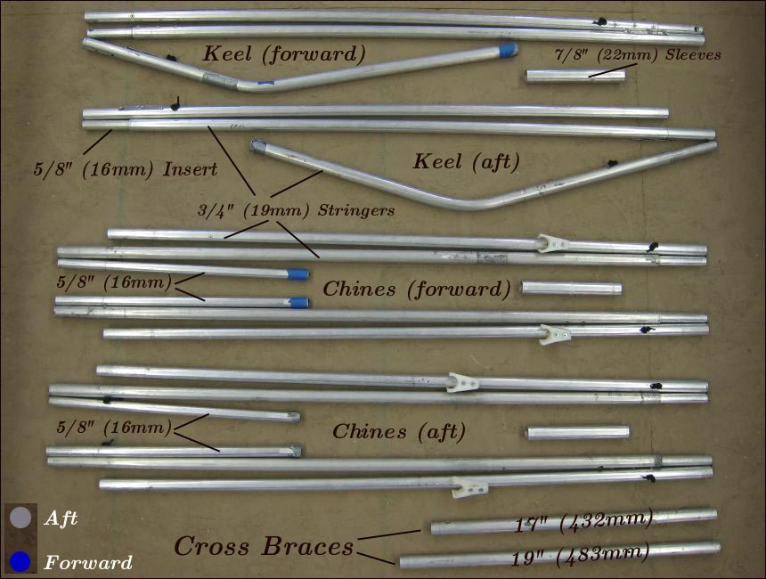

| Sonnet 16 Stringers | Menu Previous Page Next Page |
|

The Sonnet 16 frame has 3 stringers ( Keel and 2 chines) and 2 cross brace tubes. The tube sections are connected by inserts and 1/8" (3mm) shock cords. The forward half of each stringer connects to the aft half via sleeves allowing in-skin assembly. The aluminum main stringer sections are 36" X 3/4" (914 X 19mm). Inserts are 6" X 5/8" (152 X 16mm), the 3 Sleeves are 6" X 7/8" (152 X 22mm), and the 2 cross brace tubes are 3/4" (19mm). The side stringers (chines) use 15" X 5/8" (381 X 16mm) tubing at the ends.
|
|